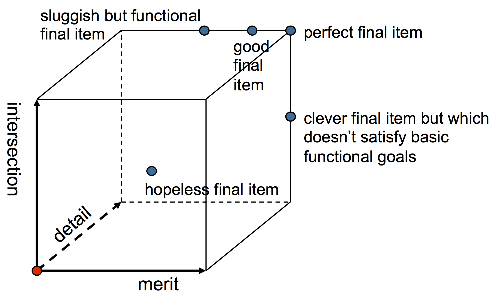

Software Development
Software Testing
Given by Nick Johnson
/ @nickaj
Nick.Johnson@ed.ac.uk
Agenda for Today
- About 45-60 minutes of talk from me.
- About 45 minutes for the practical.
- The remainder of time for questions (or feel free to email in later)
What is software testing?
The process of testing all parts of the software package to ensure a quality software product
A Quality Software Product...
- Starts with a customer with a problem
- This generates requirements
- Then you produce the solution:
-
- Design
- Code
- Installation
- Documentation
- Software is everything you deliver
- All of it is testable
A Quality Software Product or Package contains...
- Source code
- Build system
- Run/Job submission scripts
- Documentation
- Class/Unit/System/Integration Tests
- Test outputs
What is a Quality Software Product?
Testing helps ensures that we have a quality product
A quality product is one that meets the end users expectations
What is bad software?
- Any product that does not live up to its expectations
- Testing is an important part of any quality assurance process
Testing
- Improves the quality of software
- Reduces the number of errors
- Finds those errors quicker
- Gives confidence in the software itself
- Gives confidence to make changes
- Makes you think about the interfaces and purpose of different parts of the software
Testing answers questions
How do you know your program works?
Do you get the right result?
Do all the pieces work?
How can you demonstrate it is correct to others?
How do you know someone else’s code is correct?
see if it compiles?
Be clever, spend our valuable effort on important things
Test our code and prove it gives right answer
Make our lives easier by using automated testing frameworks and processes
Save us time by letting th computer do the hard work
Improve the quality of our software package by finding bugs
Let us know when we have finished
Testing is
- NOT just a bug hunt
-
- We rushed the design and development, so we’re testing to find all the bad bugs before someone else does!
- NOT something we do at the end of a project
-
- The earlier you find a bug, the easier it is to fix
- Test early, and test often!
- Do it continuously, from the start
- Bugs you find at the design stage are cheaper to fix than once you start coding
- Find errors whenthe problem area is fresh in your mind
What type of software can we test?
- Source code?
- Documentation? Results?
- Talks?
- All can be considered part of a quality software package.

Patriot Missile System
Highly publicised
Highly ineffective
- Time used to calculate target velocity
- System converted time from internal clock to an integer
- Cumulative error in conversion
- Periodic re-boot to minimise error
- No-one ever thought to test this!
Ariane 5 Explosion
- Code from Ariane 4 re-used
- Faster engines in Ariane 5 triggered a bug which caused buffer overflows
- Oops!! – No comprehensive testing of old code in the new platform
- Result – A very big bang
Therac-25: Medical Linac
Two modes: “Electron” and “X-ray”
- Defect in control sequence – user entered X by mistake
- Quickly corrected sequence, entering E
- Ran sequence – original sequence ran, not corrected
- Because user corrected error quickly, the system did not update the change.
- Several deaths occured
Adept Measurement System
High-speed measurement system for power analysis
- Hardware system created by project partner
- Sample application provided to check system health and function
- Performed conversion from measured values to real values
- Code for conversion re-used
- Output from higher stack applications tested against sample application
- Over-read power by ~2.
Poor Quality Software is
- Hard to maintain
- Hard to change
- Embarrassing
- Costly
- At worst, fatal
Costs
The cost of smaller defects can still add up
How much time does it take to find and fix a bug?
- 1 person isolating and identifying bug --> 1/2 hour
- 5 people reading bug report --> 1/4 hour per person
- 2 people reproducing bug --> 1/4 hr/person
- 1 person to fix --> 1 hr
- Testing fix --> 1/4 hour
- Commit/review changes --> 1/4 hour
- Total --> 2 1/2 hours
What happens if you find 10 bugs per day?
When caught by customers, easily add on an extra hour for measurable costs, plus harm to reputation.
The earlier in the development process you find a defect, the less expensive it is to fix
When?
Testing should occur throughout the software development process
Tests can be applied to
- Individual components
- Groups of components
- The entire system
Lets look at types of tests applied to production quality software
(Factory) Acceptance Testing
- Tests that the software does what the user wants
- They should come from the requirements
- They are MUST HAVES
- They are the first part of the software you should design
Stress or Load Testing
- Tests how robust the system is
- How does the system cope under heavy loads? – Or with large data sizes
- Sometimes to the point of failure – To test error handling
- Tests realistic input in realistic conditions
- Often code is developed using smaller computing resources
(Whole) System Testing
- Tests the entire system
-
- The system being everything you’ve done so far
- Used as a milestone check
- Gives you confidence you’re on target
- Systems tests should be designed at the same time as the code is designed
- Think of them as mini-acceptance tests
-
- Systems tests should ideally be done by a third-party (and involve an end-user)
- Involves destructive testing (looking for bugs)
- Constructive testing (suggesting improvements)
- The tester and the developer have to work together to get the most from system testing
- It’s easy for both sides to blame the other for problems
Integration Testing
- Multiple software modules are tested together to check that they integrate properly
- Designed to test the “glue”
- Checks that interfaces are being used correctly
- Tests assumptions made by developers of different modules
- Communication throughout the development process reduces the pain when you come to do integration testing
- Very important phase of testing
- It is easy for things to fall between the gaps in modules
Unit Testing
- Tests individual modules and small units of code
- Verifies the low level behaviour of the software
- More on this later...
Quality & Testing
Practical
Work in groups of 3-5 (your choice)
Grab the practicals code from www.learn.ed.ac.uk
For each code, you will have about 10 minutes to define a test plan.
blas_op.c
This code is from a functional, released benchmark set and implements (naively) some BLAS operations.
Think about:
- How would you get repeatable results across platforms?
- How would you measure success?
Python code
This code is from a functional, released network traffic tester.
- Think about: How would you test this for correctness?
- What would you need?
- How could you prove it was doing the right thing.
Python code
This code is from a functional, released network traffic tester. Think about how you would test this for correctness; what would you need; how could you prove it was doing the right thing.